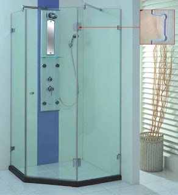
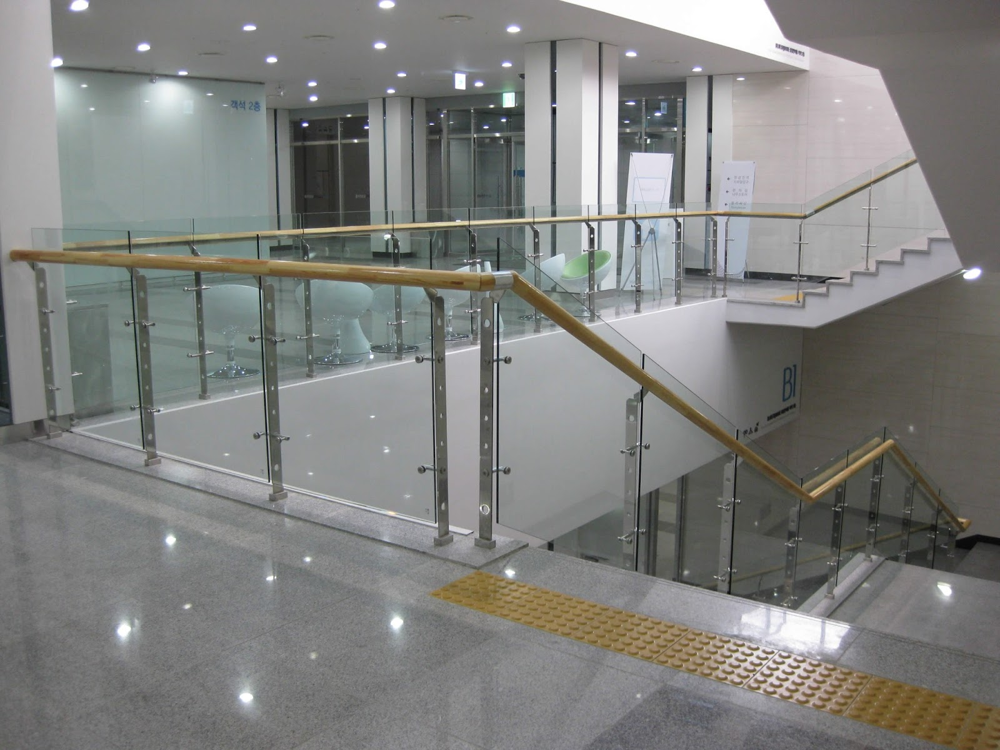
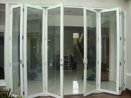
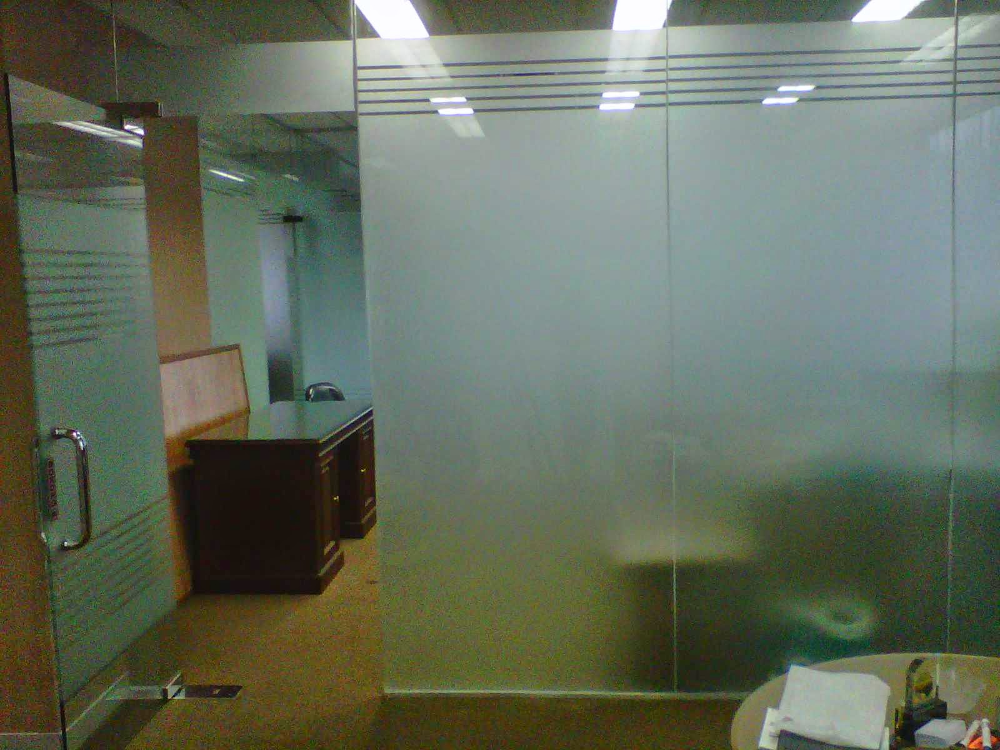

Kian berkembangnya kemajuan zaman, menjadikan banyak bahan atau material pelengkap yang dapat mempercantik hunian atau tempat usaha anda. Banyak material penyokong yang bisa diaplikasikan seperti kaca, parket lantai kayu dan masih banyak lagi. Tak cuma memperindah, namun material pelangkap hal yang demikian bisa memberi garansi keamanan pada penghuni di dalamnya. Kita acap kali menemui material-material tersebut pada gedung, kantor, industry pun rumah hunian.
Variasi-variasi kaca diantara lain kaca tempered, kaca shower, railing kaca, kanopi kaca Mojokerto dan masih banyak lagi. Seluruh material hal yang demikian dapat di aplikasikan harga sebuah hunian tampak lebih indah nyaman dan juga aman.
Distributor, Supplier & Jasa Pasang Kanopi Kaca Mojokerto
Seiring dengan perkembangan zaman di dunia properti, kini kanopi kaca Mojokerto telah berkembang cepat mencontoh arsitektur modern. Atap kaca skylight banyak diaplikasikan pada rumah, gedung, kantor, café yang mengusung gaya modern untuk membikin efek sinar yang dramatis pada ruangan bagian bawahnya serta memberi kesan modern pada bangunan. Sifat utama material bahan atap akrilik juga bisa disebut atap acrylic, ini adalah warnanya yang bening tembus pandang. Jadi sudah tak heran lagi segala orang berkeinginan mencari harga yang amat kompetitif untuk menyesuaikan budget atau anggaran mereka masing – masing untuk membuat produk canopy kaca. Kalau tembus pandang, kaca menyerap sinar yang masuk sehingga kian tebal kaca maka semakin sedikit sinar yang bisa melewatinya, maka sifat transparannya makin berkurang.|Di samping pintu kaca shower akan membikin kamar mandi kecil terlihat lebih besar. Atap akrilik atau dapat juga disebut atap kaca acrylic ini banyak ditemukan di sebuah bangunan rumah, seperti ruko, apartemen, resto, mall, sampai bangunan gedung.
Tidak anda tertarik untuk memasang kaca kanopi pada rumah, gedung maupun kantor, anda bisa langsung mengunjungi dis.or.id. Dis.or.id juga menyediakan jasa pemasangan kanopi kaca Mojokerto yang tentunya dengan bantuan daya professional yang sudah berpengalaman.
Info Lengkap Pemesanan
Google Maps: https://www.google.com/maps/d/u/0/viewer?mid=12-N5cMmHbEOEG6n-94L4JatnBnNRTFkr&ll=-7.27380280025364%2C112.65243155000007&z=18
Note: https://www.facebook.com/notes/distributor-of-industrial-supply/kontraktor-jasa-pasang-kanopi-kaca/1785710151728864/
Event: https://www.facebook.com/events/227495344457982/
Portfolio Produk: https://www.facebook.com/1681607345472479/photos/?tab=album&album_id=1712629809036899
Distributor & Supplier Kaca Shower

Anda pastinya meninginkan desain kamar mandi rumah layaknya kamar mandi hotel berbintang yang menggunakan kamar mandi duduk serta dilengkapi shower maupun bath tub. Penyekat ini akan memisahkan antara tempat basah yang diaplikasikan untuk mandi atau meletakan shower dan tempat lain yang yaitu zona kering. Kelebihan shower screen dibanding dengan cara penyekatan yang lain ialah dijadikan dalam bentuk yang sudah jadi dan tinggal dipasang saja. Shower screen adalah kotak atau alat yang berfungsi sebagai penyekat ruang khusus untuk kamar mandi. Di samping pintu kaca shower akan membikin kamar mandi kecil nampak lebih besar.
Disana tersedi kaca shower dengan berbagai ukuran dan juga harga yang juga cukup terjangkau. Tidak terbaik dan harga terjangkau. Anda bisa buktikan sendiri.
Distributor, Supplier & Jasa Pasang Kanopi Kaca
kanopi kaca Mojokerto semakin banyak diminati sebab sekarang sudah banyak bangunan yang memakai bahan kaca untuk lebih mempercantik tampilan rumah. Apabila akan memberikan kesan lapang saat berada di kamar mandi, mandi dengan shower akan memberikan kesejukan tersendiri dibanding kamar mandi dengan bak mandi. Harga dari tiap-tiap kaca yang ditawarkan cukup pelbagai tergantung kaca yang nanti akan diaplikasikan. Jadi telah tak heran lagi seluruh orang berkeinginan mencari harga yang sungguh-sungguh kompetitif untuk menyesuaikan budget atau anggaran mereka masing – masing untuk membikin produk canopy kaca. Ada sebagian alasan mengapa Pintu Kaca Shower banyak diaplikasikan salah satunya yaitu kaca lebih menonjol bersih dan rapi dan juga lebih mudah dalam perawatannya. Apabila tembus pandang, kaca menyerap sinar yang masuk sehingga kian tebal kaca karenanya kian sedikit sinar yang bisa melewatinya, karenanya sifat transparannya makin berkurang.|Di samping pintu kaca shower akan membuat kamar mandi kecil kelihatan lebih besar. Pada atap akrilik, absorpsi cahaya yang terjadi demikian kecil sehingga padahal ketebalannya bertambah, sifat transparannya tak banyak berubah. Atap akrilik atau bisa juga disebut atap kaca acrylic ini banyak ditemukan di sebuah bangunan rumah, seperti ruko, apartemen, resto, mall, hingga bangunan gedung.
Dis.or.id bisa menolong anda yang ingin memasang atap kaca skylight pada gedung, dengan beragam kelebihan yang bisa anda dapatkan dengan memanfaatkan jasa yang di tawarkan dis.or.id. Ini nampak dari bahan material yang di pakai dalam pembuatan kanopi kaca Mojokerto. Dis.or.id juga menyediakan jasa pemasangan kanopi kaca Mojokerto yang tentunya dengan bantuan kekuatan professional yang sudah berpengalaman. Setelah kaca untuk atap kanopi cukup digemari. Disana anda akan mendapat kanopi kaca Mojokerto yang sesuai dengan bermacam ketebalan dan harga yang cukup relatif murah.
Jasa Maintenance Kaca
Jasa maintenance kaca yaitu perusahaan yang akan membantu agar gedung perkantoran Anda kelihatan seperti baru. Lazimnya ditahui banyak pemilik gedung kaca yang mau merawat bangunan. Dis.or.id mempunyai energi ahli yang bisa cakap membersihkan gedung pencakar langit yang bangunannya terbuat dari kaca. Membersihkan komponen kaca gedung Anda yang mungkin rusak, pecah, atau mengalami keadaan sulit lainnya.
Sekarang juga hadir maintenance kaca untuk membersihkan kaca berbentuk melengkung. Dis.or.id menyiapkan segala ragam kaca layak keperluan saat ini.
Tak anda mebutuhkan jasa maintenance kaca, anda bisa mengunjungi dis.or.id. Untuk itu, alat-alat wajib lengkap sehingga kami mampu membersihkan seluruh sudut gedung. Dis.or.id mempunyai semua daya ahli yang di rekrut cuma mereka yang profesional yang tahu persis bagaimana metode mengaplikasikan alat dan bagaimana membersihkan kaca gedung bertingkat. Dengan sudah memberikan training terhadap kekuatan spesialis sehingga mereka sudah dapat melakukan profesi mereka dengan sungguh-sungguh bagus. Kecuali hanya dalam hal membersihkan kaca, mereka juga mampu menjalankan pembetulan serta penggantian kaca yang mengalami kerusakan.
Jasa Pemasangan Kaca Tempered
Kaca Tempered merupakan salah satu jenis kaca dari sekian banyak variasi kaca yang kerap kali diterapkan untuk jendela, pintu, dan partisi. Kecuali ini disebabkan bahan ini bukan macam kaca awam. Untuk bagian perkantoran, pintu, partisi, serta balkon lazimnya terbuat dari kaca tempered. Sementara itu, untuk rumah hunian, bagian dari rumah seperti kamar mandi serta kanopi umumnya terbuat dari kaca tempered. Banyak komponen properti yang bisa diciptakan dengan bahan berupa kaca tempered.
Kalau itu, berjenis-jenis komponen properti akan kian menarik jika dijadikan dari kaca tempered seperti kanopi, pintu, kamar mandi, dan balkon.
Salah satu variasi kaca yang pantas untuk dipakai pada segala jenis bangunan maupun perindustrian ialah kaca tempered, yakni yang paling aman sebab mempunyai elastisitas lebih baik dibandingkan dengan kaca lazimnya. Melainkan, pemasangan kaca tempered ini sepatutnya ekstra hati-hati. Tak saat ini anda sedang mau membangun suatu bangunan atau gedung, anda bisa memanfaatkan kaca tempered untuk digunakan langsung ke semua tipe bidang. Dis.or.id menawarkan jasa pemasangan kaca tempered sebab kami mempunyai alat yang komplit. Anda dapat segera mengunjungi dis.or.id untuk mendapatkan kabar mengenai jasa pemasangan kaca tempered, menggunakan kaca tempered dan pastinya hasil yang dikasih pun akan pantas dengan apa yang Anda inginkan.
Distributor & Supplier Pintu Kaca
Cara ini banyak contoh pintu seperti pantas dengan ada di bayangan Anda. Tidak hanya di gedung atau perkantoran, tapi pntu kaca juga dapat anda aplikasikan pada rumah agar cahaya dapat langsung masuk pada ruangan dan memberikan suasana hangat. Tersedia juga aluminium dan kayu seandainya Anda berharap memiliki pintu kaca dengan pigura. Sekarang hal yang demikian dapat terbuat dari kayu atau aluminum. Desain tersebut bisa disesuaikan dengan konsep properti Anda. Anda tinggal tentukan saja model pintu kaca seperti apa yang berkeinginan Anda miliki. Kini paling banyak diminati ketika ini yaitu kaca tempered sebab jauh lebih kuat dan tahan lama.
Anda dapat mempunyai pintu kaca favorit anda sekarang juga dengan mengunjungi dis.or.id. Dengan daya spesialis yang telah benar-benar handal dalam membikin beraneka teladan pintu kaca.
Dis.or.id siap untuk membuat pintu kaca cocok dengan apa yang Anda inginkan. Anda dapat memilih kaca tempered yang kini ini sedang naik daun. Untuk budget yang lebih sedikit, Anda dapat memilih tipe kaca non-tempered.
Jual Kaca Cermin
Kaca cermin bisa diciptakan aksesoris untuk mempercantik interior rumah Anda. Sekarang, cermin tak cuma berbentuk persegi saja. Ada sebagian keunggulannya. Salah satunya, kaca cermin ini bersifat refletif. Ada cermin yang didesain unik seperti penyerupai daun, oval, dan lain sebagainya. Untuk membikin ruangan private, karenanya kaca ini transparan sekiranya diperhatikan dari dalam. Sementara itu, ketika dipandang dari luar, kaca ini reflektif. Cermin minimalis memiliki siku.
Dis.or.id yaitu penyedia berjenis-jenis ukuran kaca cermin yang bisa anda aplikasikan ke gedung, kantor ataupun rumah anda. Malahan, Anda dapat pakai kaca cermin ini sekalian sebagai material utama, seperti sebagai pintu lemari di kamar tidur Anda. Atau Anda dapat memilih cermin yang dibangkai dengan berbagai macam bahan seperti kayu, aluminum, plastik, dan bahan lainnya. Sementara itu, Anda yang berada di dalam ruangan dapat melihat orang lain yang ada di luar. Atau Anda dapat buat pintu kaca cermin. Jadi, orang di luar tidak bisa melihat Anda berada di dalam. Harga yang terjangkau dan mutu terbaik ialah ciri khas dari dis.or.id.
Jasa Pemasangan Railing Kaca

Railing kaca kini kian banyak opsinya. Mungkin hal ini disebabkan kian banyak pemilik rumah yang berharap menunjukkan sebuah desain interior rumah yang benar-benar minimalis. Maka dari itu, komponen-bagian tangga tak lagi dihasilkan dengan bahan kayu. Malah aksesoris seperti pada pegangan tangga malah tidak terbuat dari bahan kayu lagi tapi kaca dan aluminum. Dalam hal kaca, Anda dapat memilih kaca tempered. Maka dari itu, para produsen berusaha untuk menjadikan railing yang terbuat dari kaca dengan figur yang berbeda-beda.
Ada banyak alternatif jenis kaca yang dapat diterapkan. Anda dapat memilih kaca tempered sebagai bahan utamanya. Railing ini dapat dibuat sebagai pembatas pada tangga dan juga sebagai pembatas pada balkon. Seandainya mendukung keamanan, railing kaca ini juga akan mempercantik desain interior rumah Anda. Dengan demikian, pecahan tidak akan melukai siapa saja. Tak anda ketika ini sedang memerlukan railing kaca untuk kantor, rumah dan tempat-daerah lainnya, anda bisa mengunjungi dis.or.id. Selain disana terdapat banyak tersedia pelbagai ukuran railing kaca dengan desain yang anda inginkan. Kalau memberikan kesan minimalis pada interior rumah, ini juga membuat rumah Anda terlihat lebih nyaman untuk dihasilkan tempat tinggal.
ukuran dan ketebalan railing kaca telah tersedia.
Distributor & Supplier Pintu Lipat Kaca

Pastinya anda telah mengenal banyak kelebihan dari kaca tempered.Lalu, berapakah harganya? Anda mungkin menyangka bahwasannya kaca ini ditawarkan dengan harga selangit. Kini pasti, modelnya banyak layak dengan yang Anda butuhkan.
Banyak hal yang telah Anda kenal tentang pintu kaca lipat tempered. Tapi bukan itu saja, aksesoris pelengkap juga berimbas. Anda wajib memastikan aksesoris yang melengkapi pintu kaca lipat mempunyai mutu terbaik, seperti model hinges. Dan yang pasti, ruangan menjadi lebih modern, minimalis, dan nyaman untuk ditempati. Jadi, bukan hanya pintu saja yang berupa kaca, namun juga segala sekat ruangan.
Jasa Pemasangan Kubikel Toilet
Kalau anda mengininkan kamar mandi yang layaknya mall ataupun hotel, ada bagusnya anda memakai kubikel kamar kecil. Banyak keuntungan yang bisa didapat dengan memakai kubikel kamar kecil seperti dapat membikin kamar kecil terlihat lebih bersih dan juga cuma membutuhkan sedikit space.
Kaca sekarang banyak digunakan sebagai penyekat ruang. Salah satunya di kamar mandi. Dengan mengaplikasikan toilet kubikel pada hunian ataupun gedung yang anda miliki tentunya banyak kelebihan yang anda daptkan yaitu harga kubikel yang lebih murah diperbandingkan dengan bahan konvensionel lainnya. Sekiranya anda tertarik untuk memiliki kubikel kamar kecil, anda dapat seketika mengunjungi dis.or.id.
Keuntungan dari sekat kaca memberikan ialah bisa memberikan efek luas sebab ruangan tersekat tetapi secara visual tak.
Kalau anda saat ini sedang membutuhkan kaca shower untuk kamar mandi, lantas saja kunjungi dis.or.id untuk melakukakn pemesanan ataupun menanyakan mendetail harga dari kaca shower. Kaca shower yang di jual di jamin kaca shower yang memiliki mutu terbaik dan bermutu tinggi.
Distributor & Supplier Partisi Kaca

Partisi kaca kini tidak di perkantoran modern atau sentra perbelanjaan. Komponen tertentu seperti kamar mandi dalam atau taman dalam ruang yang lazimnya terdapat di komponen tengah atau belakang rumah lazimnya pembatas berupa partisi kaca. Dalam hal ini, Anda wajib tahu variasi kaca apa yang baik untuk partisi. itu, tentukan juga desainnya apakah partisi kaca hal yang demikian frameless (tanpa frame) atau dengan . Selain itu, pertimbangkan juga privacy. Ini yang akan membikin Anda mempertimbangkan hal yang tepat apakah Anda menggunakan kaca transparan, semi transparan, atau kaca cermin. pemasangan lebih murah karena memerlukan waktu yang tak lama untuk memasang partisi yang terbuat dari kaca tersebut. Kualitas, untuk space yang tak begitu luas, Anda menyekat menjadi beberapa ruangan dengan partisi ini tanpa merasa ruangan menjadi amat sempit. Akan tapi, Anda sepatutnya selektif dalam hal memilih kaca untuk partisi. Selain, Anda harus amati kualitas kaca yang diterapkan. Kecuali itu, model partisi kaca ada yang frameless (tanpa pigura) dan juga ada yang menggunakan frame. Kalau anda sedang mencari distributor dan supplier partisi kaca yang mempunyai kaca dengan kualitas terbaik, anda tinggal mengunjungi dis.or.id. Disana anda akan mendapatkan partisi kaca yang sesuai dengan anda.